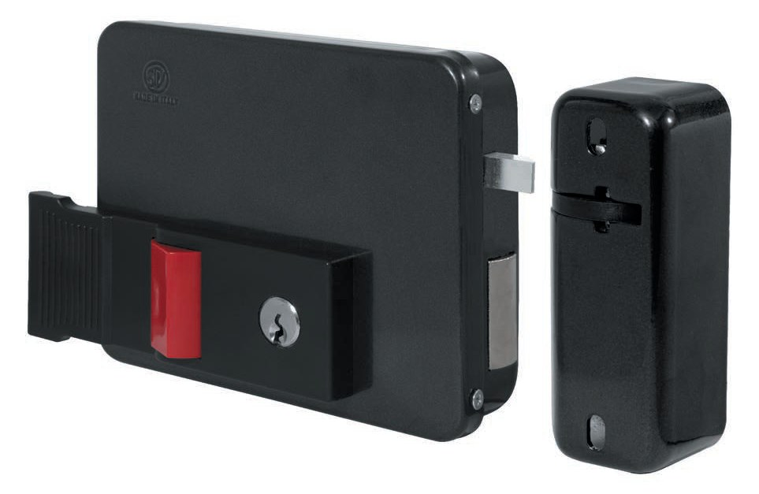

CREATURA
STV
12 / 16
Электрические накладные замки

Art. 172/E · 174/E · 176/E
Накладной электрозамок
Электрический накладной замок с кнопкой и самозапирающимся язычком-ригелем.
Цилиндры
внутренний — 3 штифта, внешний — 5 штифтов
Ключи
3 латунных никелированных
Подключение
клеммы с быстрой фиксацией
По запросу
двойной соленоид